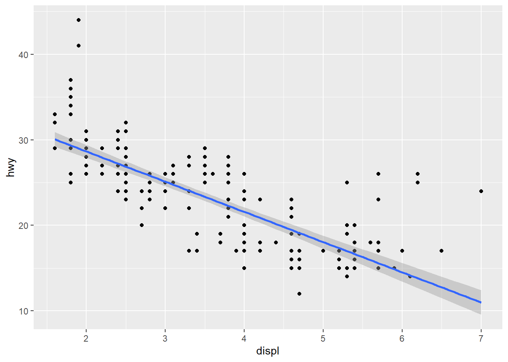

Code
my_variable <- 10
#my_varıableWhy does this code not work?
my_variable <- 10
#my_varıableSolution:
my_variableandmy_varıableare two diffrent things. As you can notice, the second object is not defined yet and doesn’t match the first syntactic name. And that’s why such anerroris raised :object 'my_varıable' not found.
Tweak each of the following R commands so that they run correctly
Solution:
It turns out that several errors were made and they comme from two issues: typos and incorrect logic applied to the
ggplot function. While typos are easy to spot, even if everything is typed correctly: thegeom_smoothfunction always requires data mappings (x and y). Because these were invoked at alocal level within geom_point, they must therefore either be passed into ggplot (at theglobal level) or explicitly reintroduced withingeom_smooth.
library(tidyverse)
ggplot(data = mpg,
mapping = aes(x = displ, y = hwy)) +
geom_point() +
geom_smooth(method = 'lm')
Press
Option + Shift + K(Mac) /Alt + Shift + K(Window). What happens? How can you get to the same place using the menus?
Solution:
Pressing Option + Shift + K (on Mac) or Alt + Shift + K (on Windows) in RStudio opens the
Keyboard ShortcutQuick Reference panel. This is an incrediblyuseful,built-in cheat sheetthat displays all the available keyboard shortcuts to help you work faster in RStudio.
To access this exact same reference panel using your mouse, you can navigate to the top menu bar and click:
- Tools > Keyboard Shortcuts Help
Let’s revisit an exercise from the Section 1.6. Run the following lines of code. Which of the two plots is saved as mpg-plot.png? Why?
my_bar_plot <- ggplot(mpg, aes(x = class)) +
geom_bar()
my_scatter_plot <- ggplot(mpg, aes(x = cty, y = hwy)) +
geom_point()
#ggsave(filename = "mpg-plot.png", plot = my_bar_plot)Solution:
As we mentioned in the previous section, we said that
ggsavesave the last plot when running the code from top to bottom. But here, we introduced a newargument(inside theggsavefunction) :plotthat refers to the exact plot we want to save. Therefore it is savingmy_bar_plotwhich is the first one.